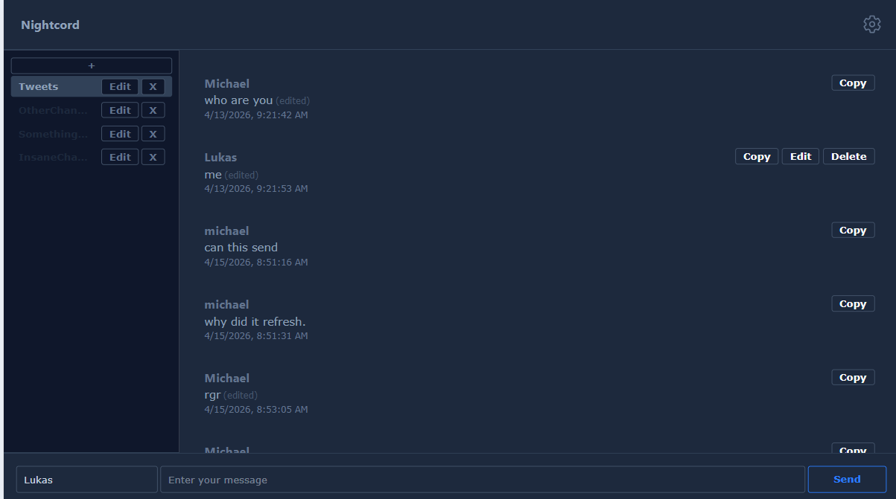
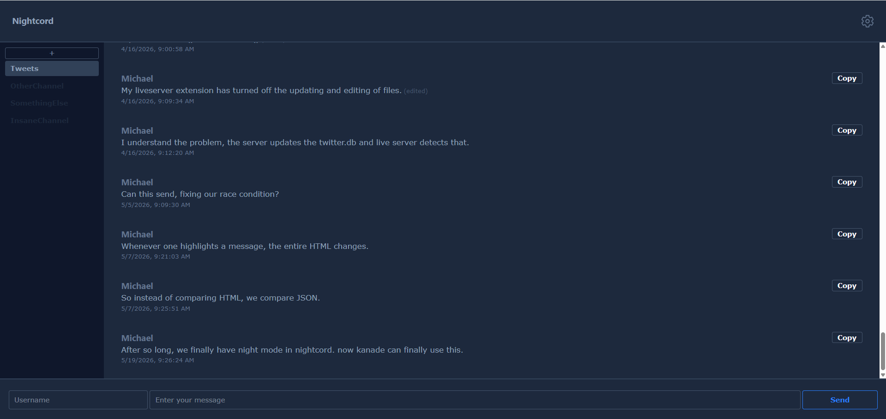
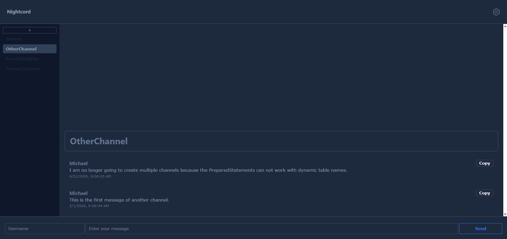
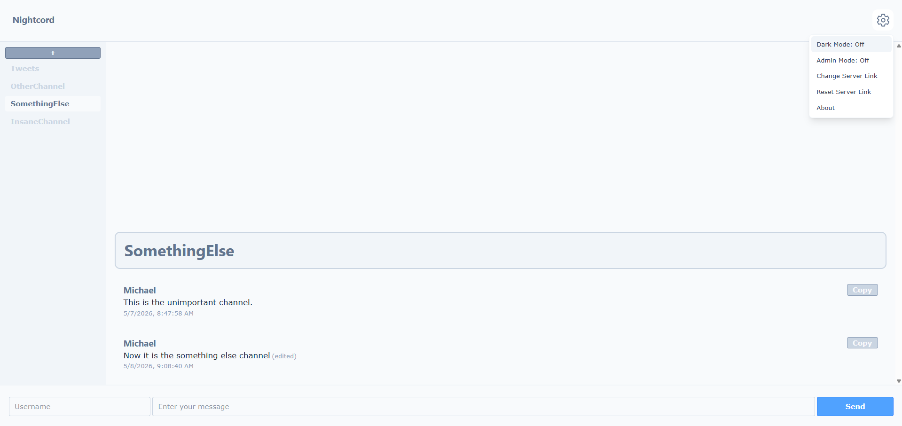
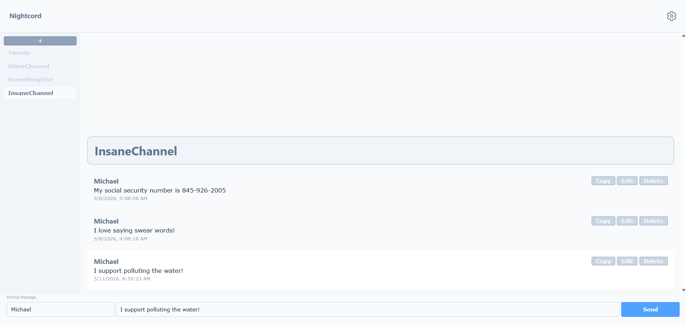

Nightcord
Nightcord is a visualization of a database of a social messaging site where people send messages to the server. Nightcord was based off of the CRUD server management and able to support countless features.
Features include:
- Automatic fetching of messages
- Sending messages to the server
- Autoincrementing internal ID's in the backend
- The editing of messages
- No sign-up: complete anomymity.
- Creating, Reading, Updating, and Deleting Channels.
- Copy messages.
- Responsive Design
- Security against SQL Injection
- Dark Mode
- Permission to edit your own messages
- Changing of Backend API endpoint
- Usage of localStorage
- About Page
You can use the channels on the left side of the website to filter the messages by the channel they are in.
Settings
Dark Mode is a feature that is browser persistent. It enables dark mode for the entire application.
Admin Mode is a feature that allows users to edit, and delete any message, even if they never sent it.
Admin mode is turned off by default but can be turned on.
Build - Linux/Github
To build, run chmod +x ./run_it.sh in the ./server directory once, then write ./run_it.sh for every subsequent running.
If you're using Windows, you can run ``javac -cp sqlite-jdbc-3.23.1.jar;. Main.java`` then ``java -cp sqlite-jdbc-3.23.1.jar;. Main``
The HTML expects the server to be at https://humble-space-disco-pjj7vvrw9j5r26v5r-8500.app.github.dev" You can check, and update the server endpoint in the settings menu. If you are running this on your own computer, it might be at http://localhost:8500. If you mess up, you can reset by clicking Reset Server LinkInternal
Inside of the ./playFiles directory, there are a lot of files that were used to test out css styling. It is recommended to paste these files into Tailwind Play to get a better preview.
The site is coded in vanilla HTML with Tailwind CSS and javascript. The backend is built with Java and a SQL database. All messages and channel data is stored in ``twitter.db``.
Images




